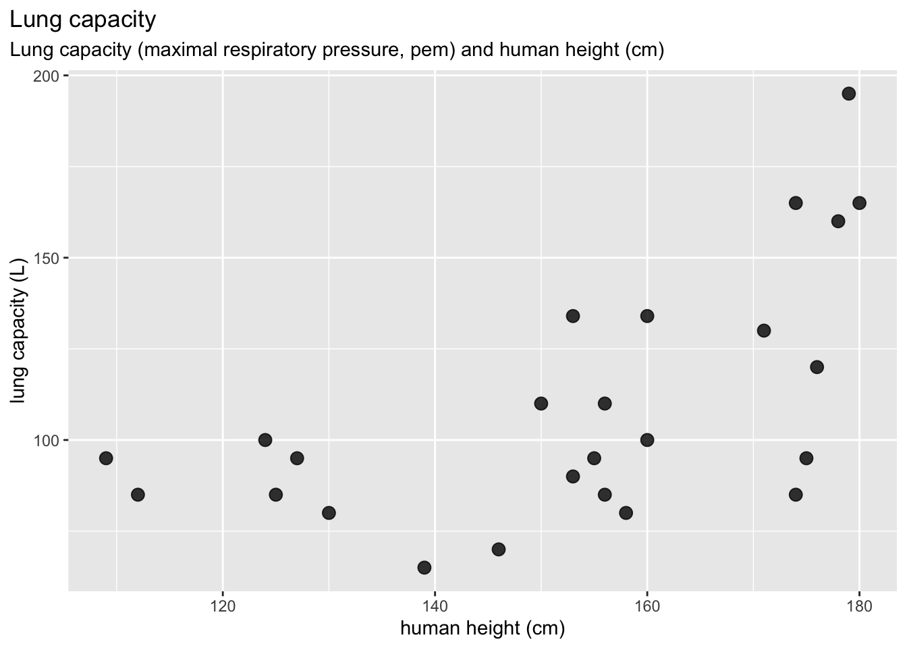

Course Project 2 Guidelines
Jelena H. Pantel
2023-11-07 13:53:14
WARNING!
This material is for the 2022 class, and has not been updated yet. This is not a final version!
Overview
You will give solutions to four problems on the topic of fitting observed data to models. You can submit your solutions by (1) uploading them to your GitHub repository ude-ecomod-hw or (2) emailing me the solutions at jelena.pantel@uni-due.de. The solutions can either be (1) a fully executable RMarkdown file (.Rmd) or (2) an R script (.R).
Please note that the following R packages should be installed to get everything I do here to work:
library(ggplot2)
library(palmerpenguins)
library(gauseR)
library(vegan)
library(mapsFinland)Problem 1. Fitting, interpreting, and predicting from a linear model
Description: We recall that in our ‘normal’ statistical lives, we may use a linear regression to model the relationship between two continuous variables. I made the point that a regression is a mathematical model! Let’s work with a linear regression in R, and how to interpret the output (you will have more of this later in a proper statistics class, but let’s review for now).
Data / Problem: Imagine we are researchers studying penguins in Antarctica, more specifically penguins observed at the Palmer Station inhabiting Biscoe, Dream, and Torgersen islands.

We have access to camera data that allows us to measure penguin flipper length (mm), and we would like to use that to predict penguin body mass (g). This would save a lot of effort by not having to weigh new penguins! We use an existing dataset with observed values for penguin flipper length and body mass, fit a linear model to predict mass from flipper length, and then use the fitted model to make predictions for new cases.

The data can be found here:
data(package = "palmerpenguins")- Please use the
lmcommand to fit a linear model to estimate ybody_mass_gas a function of xflipper_length_mm: \(y = mx + b\). Tell me the model estimates for the parameters \(b\) (y-intercept) and \(m\) (slope). Then, use thepredictcommand to tell me the model-predicted values for penguin body mass when the flipper lengths are 190, 215, and 230 mm.
Problem 2. Fitting, interpreting, and predicting from a logistic growth model using nls
Description: We considered a model for logistic growth:
\[ \frac{dN}{dt} = rN(1- \frac{N}{K}) \] where r is the population growth rate, K is the population carrying capacity, and N is the population size. We would like to evaluate some population data, fit it to a logistic growth model, and estimate parameters in that logistic growth model.
Data / Problem: We will use data for a Paramecium from Gause’s experiments.

{kind=link}
# load data
data(gause_1934_book_f22)
dat <- gause_1934_book_f22[gause_1934_book_f22$Treatment == "Pa",
]Create a plot of the population size over time (
dat$Days) for species 2 only (dat$Volume_Species2). Then I would like you to use thenlscommand to fit this observed data to a logitic growth model (Volume_Species2 ~ Day).Recall that
nlshas some built-in models, and one of the was for logistic growth. You can find that via the functionSSlogis. This will work similarly to the Michaelis-Menten (SSmicmen) example we did in class January 19.There is one very important consideration!! R’s
nlscommand does not use the exact same logistic model I show you above. Instead it fits the model as:
\[ \frac{dN}{dt} = \frac{r}{1+ e^{(-K(N-N_m))}} \]
This form is a bit different than what you are used to, but it still considers exponential growth at a rate r, then population size limitation by the carrying capacity K. There is a new parameter, \(N_m\) - this is the value of N at the inflection point of the logistic curve. So in this logistic model, there are three parameters you need to estimate. Please use the
nlscommand to estimate the parameters r, K, and \(N_m\).Report the parameter values given by the model fit.
Please make a plot of the original data, and the curve fit by the logistic model produced by the
nlscommand. Mine looks like this:
Problem 3. Fitting, interpreting, and predicting from a logistic growth model using gauseR
Data / Problem: For the same Paramecium dataset, use
the function gause_wrapper in the R package
gauseR to fit the data for Species 2 (the same data as
above). This is yet another version of the logistic growth model.
Instead of using carrying capacity K, it uses an
intraspecific competition coefficient \(\alpha_{ii}\):
\[ \frac{dN_i}{dt} = \frac{r} {1 + \alpha_{ii}N_{i}} \]
So please estimate the values of r and \(\alpha_{ii}\), and show the plot with the raw data and curve fit. You will use the command
gause_wrapper- note from the example last week that you don’t need to do much to get this to work!Please give me the model estimates for r (given in the output variable as
r1) and for \(\alpha_{ii}\) (given in the output variable asa11). Note that you can access this using the name of the output variable, then addending$parameter_intervals. So for example, if I assign the results of thegause_wrappercommand to a variable calledgause_out, then I can get the parameter values by typinggause_out$parameter_intervals. The values are given in themucolumn.
Problem 4. Fitting, interpreting, and predicting from a species-area curve using vegan and nls
Description: A reliable pattern we can observe in nature is the relationship between area (of habitat) and number of species observed. You can read more about that in this paper, Lomolino 2000. The exact shape of this curve can take a few different forms. For example, here is a plot showing the number of terrestrial isopods on the central Aegean islands:

 One curve that can often
describe the species-area relationship is an Arrhenius curve.
The function for this is:
One curve that can often
describe the species-area relationship is an Arrhenius curve.
The function for this is:
\[ Species = k*area^z \]
Where parameter z is the steepness of the species-area curve, and k is the expected number of species in a unit area.
Data / Problem: We have some data for bird species on the Sipoo island archipelago (a district of Finland) (the data is using ‘hectares’ as units, a hectare is equal to 10,000 square meters).
data("seutukunnat2019")
ggplot(seutukunnat2019) + geom_sf() + ggtitle("Finland: Maps in R!")## Get species area data: sipoo.map gives the areas of
## islands
data(sipoo, sipoo.map)
S <- specnumber(sipoo)
plot(S ~ area, sipoo.map, xlab = "Island Area (ha)", ylab = "Number of Bird Species",
ylim = c(1, max(S)))
- An R package,
veganhas some nls models included that are commonly used in ecology! After loadinglibrary(vegan), please use thenlscommand and theSSarrheniusmodel to fit the modelS ~ areaand estimate the parameterskandz. Add the curve to the plot. Mine looks like this:

- Please give me the values for the estimated model parameters (you
can use
summaryorcoefon the fit nls model object to get these).